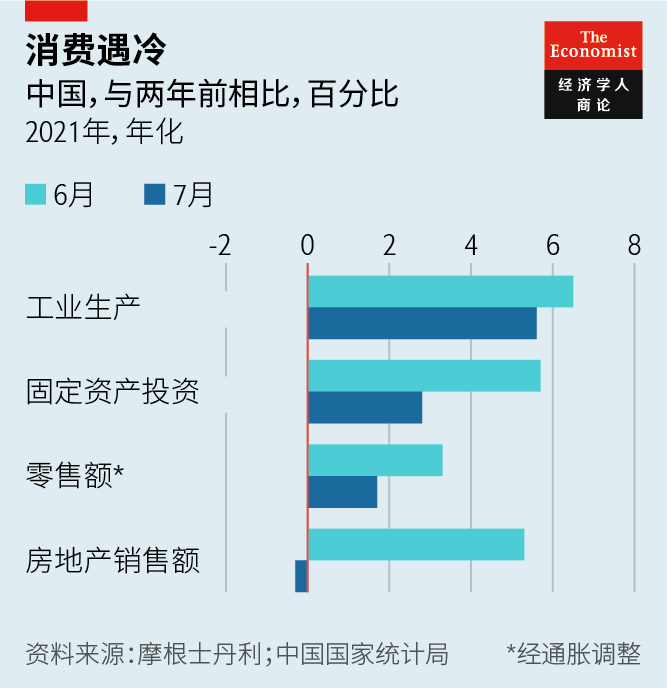

2021-08-29T15:09:14+00:00
Delta neutral
德尔塔中性
德爾塔中性
China’s Delta dilemma
中国面对德尔塔的两难之境
中國面對德爾塔的兩難之境
Efforts to battle the virus compound an economic slowdown
抗击德尔塔病毒加剧经济放缓
抗擊德爾塔病毒加劇經濟放緩

TRADE HAS flowed through the port of Ningbo on China’s east coast since the Tang Dynasty in the 8th century. After the first opium war ended in 1842, it was one of five points of entry forcibly opened to foreign merchants. And in the first half of this year the port (which merged with neighbouring Zhoushan port in 2015) handled more tonnes of cargo than anywhere else in the world. A tour group of 80 students recently spent three days admiring the free-trade zone and the port’s “hardcore” power, as Ningbo city government put it.
自八世纪的唐朝起，中国东部沿海的宁波港就一直有贸易流通。1842年第一次鸦片战争结束后，它成为被迫向外国商人开放的五个口岸之一。今年上半年，该港口（2015年与邻近的舟山港合并）的货物吞吐量居世界第一。前不久，一个80人的学生团体对宁波港自贸区以及宁波市政府所说的港口“硬核”力量开展了为期三天的参观学习。
自八世紀的唐朝起，中國東部沿海的寧波港就一直有貿易流通。1842年第一次鴉片戰爭結束後，它成為被迫向外國商人開放的五個口岸之一。今年上半年，該港口（2015年與鄰近的舟山港合并）的貨物吞吐量居世界第一。前不久，一個80人的學生團體對寧波港自貿區以及寧波市政府所說的港口“硬核”力量開展了為期三天的參觀學習。
But on August 11th activity at one of the port’s busiest terminals came to an abrupt halt. A 34-year-old dockworker, who had come into contact with visiting crews, was diagnosed with the Delta variant of covid-19 despite having received two shots of the Sinovac vaccine. That solitary infection was all it took for the government to shut down operations and consign 254 of his close contacts (and a further 396 of their contacts) to quarantine.
然而在8月11日，宁波港最繁忙的码头之一突然停止了作业。一名曾与到访船员有过接触的34岁的码头工人被检测出感染了德尔塔变异毒株，尽管他已经注射了两剂科兴疫苗。就因为这仅有的一起病例，宁波市政府叫停了码头作业，并隔离管控此人的254名密切接触者和396名次密切接触者。
然而在8月11日，寧波港最繁忙的碼頭之一突然停止了作業。一名曾與到訪船員有過接觸的34歲的碼頭工人被檢測出感染了德爾塔變異毒株，儘管他已經注射了兩劑科興疫苗。就因為這僅有的一起病例，寧波市政府叫停了碼頭作業，並隔離管控此人的254名密切接觸者和396名次密切接觸者。
The case is revealing in three ways. It illustrates once more how hard it is to keep the Delta variant at bay. It demonstrates how hard China will, yet again, nonetheless try to do just that. And it shows how widely around the world this struggle will be felt. The terminal shutdown follows a similar closure at Yantian port on China’s south coast in May (as well as disruptions wrought by last month’s typhoon In-Fa). It now takes about 70 days for ocean freight to travel from its point of origin in China to its final destination in America, compared with 47 last August, according to Freightos, a digital freight marketplace. Some experts worry that the shipping delays and the prospect of future shutdowns may even disrupt the West’s Christmas shopping.
这起事件说明了三点。首先，它再次显示了抗击德尔塔变异病毒的难度之大。其二，尽管如此之难，中国还是会再次不遗余力地遏制它。其三，这轮艰难的抗疫行动将在全世界造成广泛影响。今年5月，中国南部沿海的盐田港也曾因疫情关闭过（上个月，台风“烟花”也一度造成各地港口停工)。数字货运市场Freightos的数据显示，目前货物从中国海运到美国大约需要70天，而去年8月为47天。一些专家担心，运输延误和未来可能再度发生港口关停甚至会影响到西方的圣诞节采购。
這起事件說明了三點。首先，它再次顯示了抗擊德爾塔變異病毒的難度之大。其二，儘管如此之難，中國還是會再次不遺餘力地遏制它。其三，這輪艱難的抗疫行動將在全世界造成廣泛影響。今年5月，中國南部沿海的鹽田港也曾因疫情關閉過（上個月，颱風“煙花”也一度造成各地港口停工)。數字貨運市場Freightos的數據顯示，目前貨物從中國海運到美國大約需要70天，而去年8月為47天。一些專家擔心，運輸延誤和未來可能再度發生港口關停甚至會影響到西方的聖誕節採購。
The port infection is part of an outbreak that was first discovered on July 20th at Nanjing airport. By August 10th it had spread across a dozen provinces. Unlike other countries, which are learning to live with Delta, China has imposed a hardcore combination of widespread testing and uncompromising quarantines. Anyone who tests positive is whisked to hospital, even if they are free of symptoms. Anyone judged to have come into close contact with them (based on mobile-phone data and other indicators) is quarantined, as are close contacts of these contacts. By August 10th China had quarantined 50,808 people, more than 20 for every active confirmed case. The government has discouraged inessential travel between cities and provinces. And two of the worst-hit cities, Nanjing and Zhengzhou, have postponed the start of the school year. According to a gauge of lockdowns devised by Goldman Sachs, a bank, China’s restrictions are now as tight as they were in April 2020.
这轮疫情始于7月20日在南京机场首次发现德尔塔毒株感染，宁波港病例是这期间的一例。到8月10日，此轮疫情已经蔓延到十几个省份。与其他正在学习与德尔塔病毒共存的国家不同，中国采取了广泛核酸检测和强制隔离相结合的硬核措施。所有检测呈阳性的人，哪怕是无症状感染者，都会被迅速送往医院。根据手机数据和其他指标判定的所有密切接触者都会被隔离，次密切接触者也一样。截至8月10日，中国已经隔离了50,808人，平均每个现有确诊病例会导致20多人被隔离。政府已经号召民众非必要不出省出市。疫情最严重的南京和郑州已经推迟了秋季学期开学。根据高盛制定的疫情封锁评估标准，中国目前的限制措施与去年4月时一样严格。
這輪疫情始於7月20日在南京機場首次發現德爾塔毒株感染，寧波港病例是這期間的一例。到8月10日，此輪疫情已經蔓延到十幾個省份。與其他正在學習與德爾塔病毒共存的國家不同，中國採取了廣泛核酸檢測和強制隔離相結合的硬核措施。所有檢測呈陽性的人，哪怕是無癥狀感染者，都會被迅速送往醫院。根據手機數據和其他指標判定的所有密切接觸者都會被隔離，次密切接觸者也一樣。截至8月10日，中國已經隔離了50,808人，平均每個現有確診病例會導致20多人被隔離。政府已經號召民眾非必要不出省出市。疫情最嚴重的南京和鄭州已經推遲了秋季學期開學。根據高盛制定的疫情封鎖評估標準，中國目前的限制措施與去年4月時一樣嚴格。
The impact of the restrictions is already showing up in high-frequency data. Airports were operating at only 38% of their capacity on August 12th, according to Flight Master, an online-travel platform. And the median amount of traffic congestion in the 12 cities most affected by the outbreak has fallen 12% below its pre-pandemic norm, according to Ernan Cui of Gavekal Dragonomics, a research firm.
这些限制措施带来的影响已经开始在高频数据中显现出来。根据在线旅行平台Flight Master的数据，8月12日，机场运力利用率只有38%。研究公司龙洲经讯（Gavekal Dragonomics）的崔尔南表示，在受此次疫情影响最严重的12个城市，交通拥堵中值比疫情前的正常水平下降了12%。
這些限制措施帶來的影響已經開始在高頻數據中顯現出來。根據在線旅行平台Flight Master的數據，8月12日，機場運力利用率只有38%。研究公司龍洲經訊（Gavekal Dragonomics）的崔爾南表示，在受此次疫情影響最嚴重的12個城市，交通擁堵中值比疫情前的正常水平下降了12%。
This immobilisation will add to an economic slowdown that was already under way. Industrial production, retail sales, investment and property sales were all weaker than expected in July (see chart), partly because the government is trying to curb steelmaking to preserve the environment, and housing speculation to preserve financial stability. Ting Lu of Nomura, another bank, expects GDP to be only 0.3% higher this quarter than last. He has cut his forecast for growth this year from 8.9% to 8.2%, which might warrant further easing from China’s central bank, even as housing curbs remain.
这种“限流”将让本已在放缓的经济雪上加霜。7月的工业生产、零售额、投资和房地产销售额数据都不如预期（见图表），部分原因是政府试图限制钢铁生产以保护环境，以及抑制炒房以保持金融稳定。另一家投行野村证券的陆挺预计，本季度GDP环比仅增加0.3%。他已将今年的经济增长预期从8.9%下调至8.2%。这可能让人行据此在继续保持楼市调控的同时进一步采取宽松的货币政策。
這種“限流”將讓本已在放緩的經濟雪上加霜。7月的工業生產、零售額、投資和房地產銷售額數據都不如預期（見圖表），部分原因是政府試圖限制鋼鐵生產以保護環境，以及抑制炒房以保持金融穩定。另一家投行野村證券的陸挺預計，本季度GDP環比僅增加0.3%。他已將今年的經濟增長預期從8.9%下調至8.2%。這可能讓人行據此在繼續保持樓市調控的同時進一步採取寬鬆的貨幣政策。
China’s slowdown is moving financial markets at home—the CSI300 index of large Chinese stocks has fallen by 4% since August 10th—and worldwide. The price of iron ore has slumped by 21% since the end of last month, and the price of copper has fallen by more than 5%. China’s tough stance will also prevent any revival of travel to other countries. That is bad news for places like Thailand, which relied on Chinese visitors for almost 30% of its tourist receipts before the pandemic.
中国经济放缓正在给本国金融市场带来影响——自8月10日以来，代表中国大盘股的沪深300指数已经下跌了4%——同时也影响着全球金融市场。自7月末以来，铁矿石价格骤降21%，铜价下跌超过5%。中国强硬的防疫立场也让出境游没有丝毫复苏的可能。这对泰国等依赖中国游客的地方来说是个坏消息。新冠疫情前，泰国近30%的旅游收入来自中国游客。
中國經濟放緩正在給本國金融市場帶來影響——自8月10日以來，代表中國大盤股的滬深300指數已經下跌了4%——同時也影響着全球金融市場。自7月末以來，鐵礦石價格驟降21%，銅價下跌超過5%。中國強硬的防疫立場也讓出境游沒有絲毫復蘇的可能。這對泰國等依賴中國遊客的地方來說是個壞消息。新冠疫情前，泰國近30%的旅遊收入來自中國遊客。
China’s fight against Delta will be costly. But it is also proving successful. New local infections (excluding imported cases) dropped to just six on August 16th. The outbreak has started to narrow in scope as well as scale: 134 neighbourhoods still remain at risk, by the government‘s reckoning, down from 224 on August 10th.
中国将为抗击德尔塔病毒付出高昂的代价。但这场抗疫也在取得成功。8月16日，本土新增病例（不包括境外输入病例）下降到仅六例。疫情爆发的规模和范围都在减小：根据政府统计，当时仍有134个中高风险地区，而8月10日有224个。
中國將為抗擊德爾塔病毒付出高昂的代價。但這場抗疫也在取得成功。8月16日，本土新增病例（不包括境外輸入病例）下降到僅六例。疫情爆發的規模和範圍都在減小：根據政府統計，當時仍有134個中高風險地區，而8月10日有224個。
China has both an unusual ability to contain Delta outbreaks and a strong incentive to do so. It lacks two of the characteristics that have allowed other countries to tolerate an otherwise disturbing rate of Delta infections. Relatively few of China’s people have caught covid-19 in the past. As a consequence, few have any natural immunity to the disease. And although a respectable percentage of the population have received two jabs (over 55%, according to the government) China’s vaccines appear less effective than Western versions. The share of China’s population that enjoys some kind of immunity is lower than India’s or even Indonesia’s, according to Goldman Sachs, even though its vaccination rate is far higher. If China were to drop its defences and tolerate the infection rates common in Europe and America, the number of people suffering from severe illness could rise to alarming levels.
在控制德尔塔病毒爆发方面，中国既有特有的能力，也有强烈的动机。其他国家之所以经受得住原本应该令人不安的德尔塔病毒感染率，是因为它们具备了几个特征，而其中有两个是中国不具备的。其一，中国已经感染过新冠肺炎的人数相对较少。因此，很少有人获得对这种疾病的自然免疫力。其二，虽然有相当比例的人接种过两剂疫苗（根据政府的数据，这一比例超过55%），但中国疫苗的有效性似乎不如西方的疫苗。高盛的数据显示，中国具有一定免疫力的人口比例低于印度，甚至低于印尼，尽管中国的疫苗接种率要高得多。如果中国放弃防控措施，经受欧洲和美国习以为常的感染率，重症患者数量可能就会上升到令人担忧的水平。
在控制德爾塔病毒爆發方面，中國既有特有的能力，也有強烈的動機。其他國家之所以經受得住原本應該令人不安的德爾塔病毒感染率，是因為它們具備了幾個特徵，而其中有兩個是中國不具備的。其一，中國已經感染過新冠肺炎的人數相對較少。因此，很少有人獲得對這種疾病的自然免疫力。其二，雖然有相當比例的人接種過兩劑疫苗（根據政府的數據，這一比例超過55%），但中國疫苗的有效性似乎不如西方的疫苗。高盛的數據顯示，中國具有一定免疫力的人口比例低於印度，甚至低於印尼，儘管中國的疫苗接種率要高得多。如果中國放棄防控措施，經受歐洲和美國習以為常的感染率，重症患者數量可能就會上升到令人擔憂的水平。
China is unusually good at fighting Delta. And it needs to be. Having failed to fail against previous waves of the disease, it is now obliged to succeed again.
中国在遏制德尔塔病毒上鹤立鸡群。它也必须如此。中国在与前几波新冠疫情的斗争中从未失手，现在它必须再次胜出。
中國在遏制德爾塔病毒上鶴立雞群。它也必須如此。中國在與前幾波新冠疫情的鬥爭中從未失手，現在它必須再次勝出。